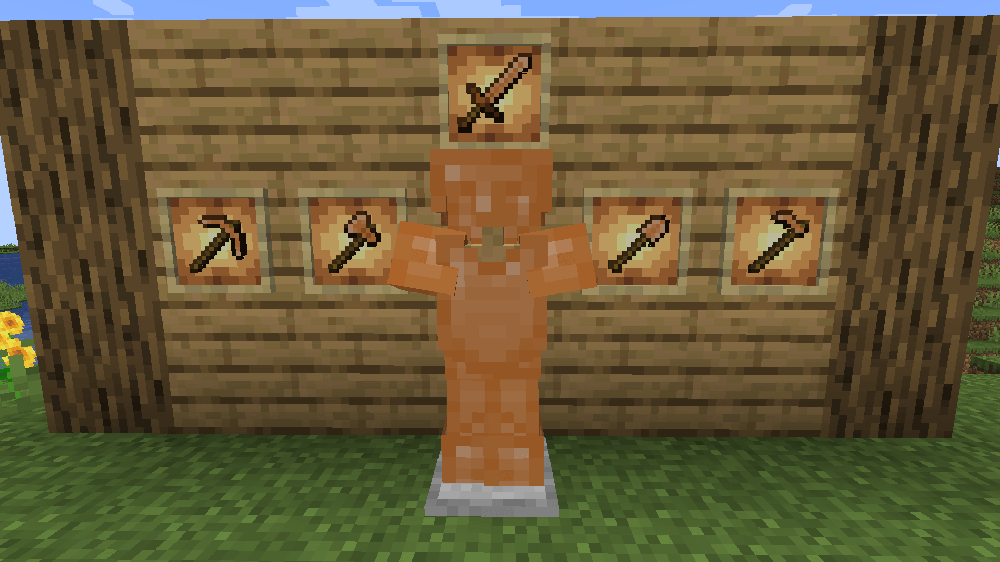
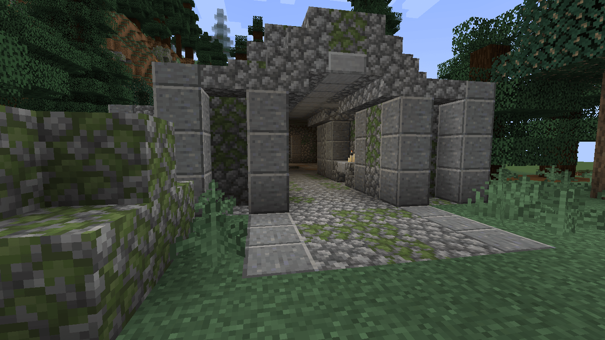
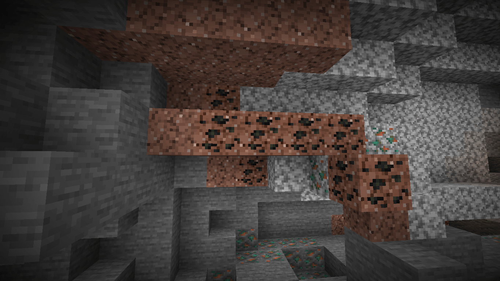
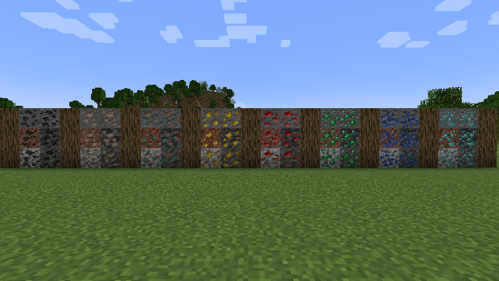

Welcome to my website! Here, you'll find a little bit about me, my projects and what I do.
Enhanced Playthrough is an overhaul mod developed for Minecraft 1.20.1 using the Forge development environment. Overhaul mods are intended to replace vanilla systems and progression to take a different approach according to the developers vision.


Enhanced Ore Variety is a mod for Minecraft that adds some variants to all the vanilla ores. This might sound simple, but adds more immersion to the Minecraft world. Currently, it has over 100.000 downloads on Curseforge and Modrninth.


I made my own web page, if you haven't noticed. Is a modest place, used to display the better of my work.
I am a junior developer from Argentina, specialized on Minecraft modding but always trying to learn new technologies. I also study Systems Engineering at the UTN (acronym of Universidad Tecnológica Nacional), I’m currently on my first year.
You can find me online as Mar Mar, MarMar1134 and MarMarDev.